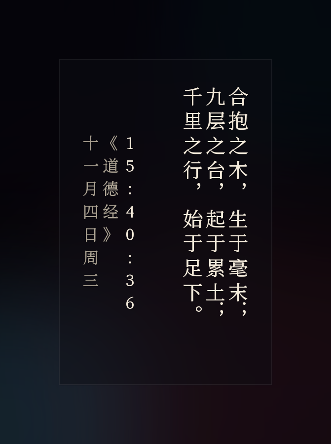
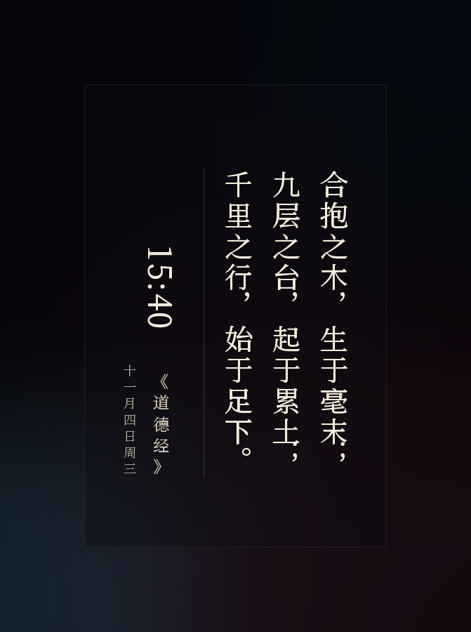
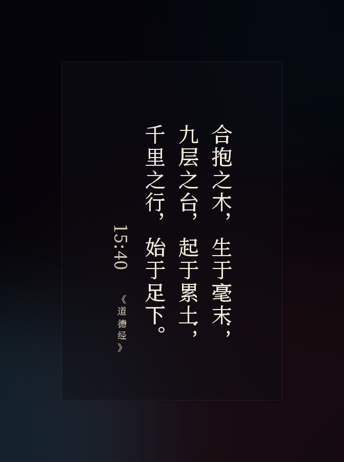
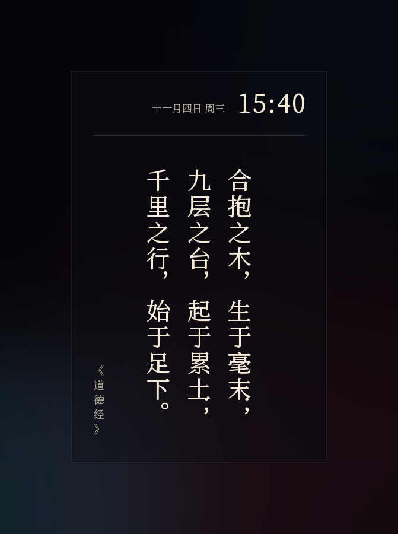
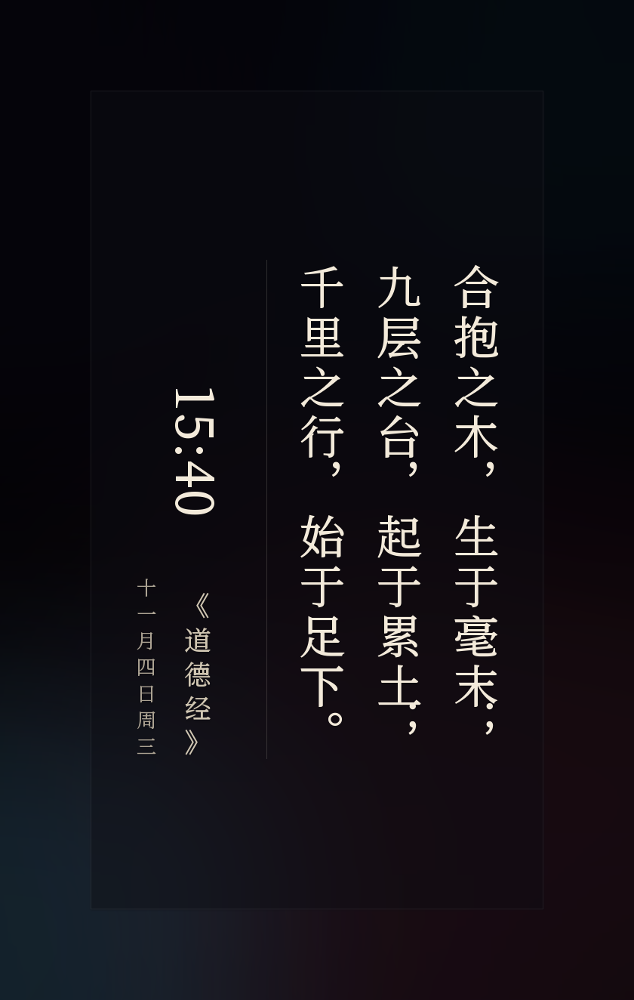
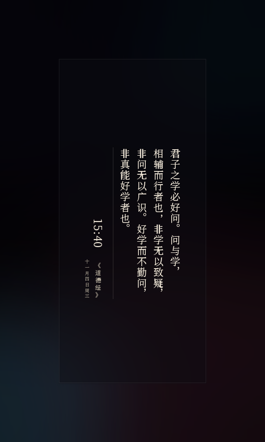

2026-11-04 ／ 只出草案，未改代码 ／ 样机按 1:1 像素生成
竖排现在不好看，不是字体的问题，是度量的问题：列距只有字宽的 1.15 倍，等于列间没有白； 时间被按字拆成一列数字；落款三列小字并排，和正文一个密度。这三条决定了「很难获取信息」。
这份草案做三件事：给竖排一套固定字格、一条界栏、一个整块居中的字块， 再给出三个形态（条幅／极简／栏头）供你选一个方向。

字块是画面主体。它必须成块（列距均匀）、居中（两侧留白相等）、有边界（与落款分开）。现在它贴着右缘、上下顶格，看起来像被窗口裁剩下的。
横排换行是往下跳，竖排换列是往左跳——横向跳更费眼。所以列间留白必须明显大于字间：字距 1.10em、列距 1.70em，比值 1.55。
数字竖排要一个字一个字往下认；整块顺时针旋转 90° 之后，它仍然是一个「词」，歪一下头就一眼读完。旋转是竖排处理西文与数字的常规手段，不是取巧。
竖排从右往左读，最左是末尾。所以落款只在左侧、只比正文弱：字号 0.58em／0.44em，颜色降一档，且与正文同底收尾。
| 度量 | 现状 | 草案 | 为什么 |
|---|---|---|---|
| 列距 P | 1.15em | 1.70em | 列间白 0.70 字，眼睛有落点 |
| 单元格 | 1.24em | 1.10em | 字距收紧，把空间让给列距 |
| 天头 | 1.20em | 1.55em | 上重下轻，是挂轴的观感 |
| 地脚 | 1.20em | 1.15em | 略小于天头 |
| 左右边距 | 1.20em | 0.85em | 竖排的呼吸在上下，不在左右 |
| 落款 | 3 列 / 0.80em | 2 列 / 0.58·0.44em | 并排三列必然糊，堆叠才分得清 |
| 时间 | 逐字竖排 | 整块旋转 90° | 一个词，不是一个字串 |
| 界栏 | 无 | 1px / 16% | 最省墨的分区手段 |
| 断列 | 满格硬切 | 一句一列 ±30% | 一列一口气 |
| 列数 | 能塞几列塞几列 | 长宽比 ≈ 0.55 | 竖幅画心大致 1:1.8 |
em = 正文字号。1.70em 这类值都按 em 给，换字号不用重算。
差别只在「时间放哪、落款多重」。三个都是 431×660、字号 200% 的同一句话。

左：时间（旋转）+ 出处；再左：日期。中间一条界栏，右边正文。整块水平居中，正文竖直居中，落款与正文同底收尾。
三个形态里只有它把「正文 / 时间 / 署名」三级同时摆清楚：界栏给了分区的合法性，落款两列堆叠不再和正文比密度，时间旋转成块之后是一个整体。
适用：默认形态，任何句长都稳。
代价：落款固定占 2.5em 宽，窄窗时要让列。

无界栏、无日期。落款只剩一个 0.85em 的旋转时钟和一列出处，缩在正文最左列的下方（放不下才另起一列）。
适用：只想看字、桌面要干净。代价：时间弱一档，扫视性差。

时间 1.05em 横排压在顶上，右侧带日期，一条细线分界，正文从线下开始竖排并居中，出处接在末列末尾。
适用：宽窗、或「时钟要显眼」。代价：横竖混排，最不古。


竖排的字块大小由字数决定，窗口大小由em决定。两者不成比例时，短句一定有空—— 设计能做的是让空均分在两侧，而不是全堆在左边。这条推论给出了一个硬建议：
按你惯用的优先级排，P0 三条不改就等于没做。
| 优先 | 位置 | 改什么 |
|---|---|---|
| P0 | layout.rs:199 layout.rs:218 |
竖版拆出独立度量：col_pitch 1.15em → 1.70em、cell_h 1.05·char_h → 1.10em。横版不动。 |
| P0 | render.rs:587 | layout_sign 从「三列并排」改成「两列堆叠」：时间块 + 出处同列，日期一列；整组与正文同底。 |
| P0 | render.rs:1126 | 竖版时钟从逐字 draw_vtext 改为整块旋转 90°：SetGraphicsMode(GM_ADVANCED) + SetWorldTransform。 |
| P1 | render.rs:795 | quote_band_v 的版心 = 正文块本身（而不是「落款右侧的剩余区」），并让整块水平居中、竖直居中。 |
| P1 | layout.rs:497 | 断列改成「一句一列」：列长在 cap 的 0.75–1.30 倍之间浮动，优先落在句读后；列数按字块长宽比 0.55 选。 |
| P1 | render.rs:1164 | 分隔线从「仅横版」放开到竖版（竖向 1px，主色 16%），位置贴正文块左缘而不是固定 x。 |
| P2 | config.rs:475 config.rs:491 |
边距拆成天头／地脚／左右四个值；pad_v 只在窄窗兜底。新增 v_form（条幅／极简／栏头）。 |
A 条幅（推荐）／B 极简／C 栏头。
也可以 A 做默认、C 做宽窗自动切换。
左（旋转，随落款）／顶（横排，最易读）。
这是三套里唯一不可兼得的选择。
保留「十一月四日周三」／只留月日／不要。
落款每多一行，字块就多占一列宽度。
定完这三条我就按 P0 → P1 落代码，并用 --dump 出同尺寸对照图验收； 样机脚本在 tools/vertical_mock.py，改一个数字重跑就能看效果。